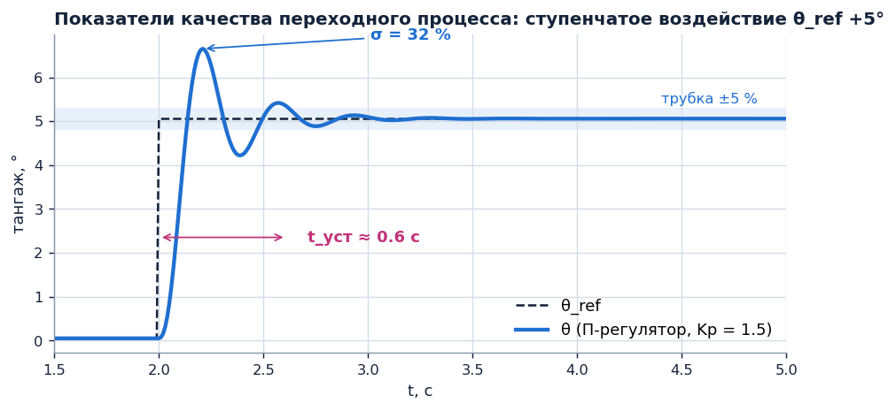
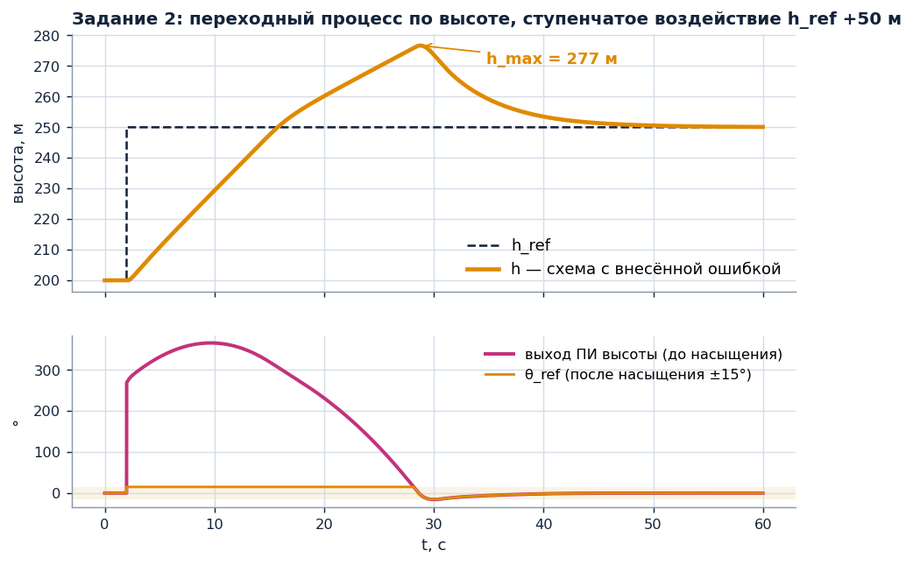
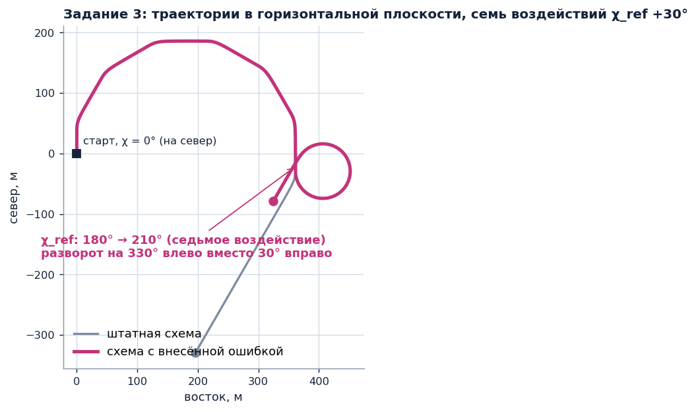

Лабораторная работа 6. Синтез контуров САУ методом последовательного замыкания
В работе контуры САУ собираются из типовых звеньев в редакторе структурных схем, испытываются
на 6DOF-модели FPV-самолёта и оцениваются по показателям качества переходного процесса. Исходный код
симулятора не изменяется: параметры задаются в редакторе схем, воздействия — кнопками уставок,
условия опыта — аргументами запуска.
Условия опытов и методика измерений
Команды выполняются из корня проекта. Флаг --sensors truth исключает шум и запаздывание
датчиков; это обеспечивает воспроизводимость результатов и их сопоставимость между бригадами.
python scenarios/BlockLab3D.py --sensors truth --template "Заготовка: тангаж → δe"
Работа со стендом
«▶ Применить» (Ctrl+Enter) проверяет схему; «Схема: ВКЛ» подключает её выходы к приводам рулей.
Приводы, не подключённые к схеме, управляются штатной САУ.
При расходящихся колебаниях нажмите «Схема: ВЫКЛ»: управление вернётся к штатной САУ.
Параметры блока открываются двойным щелчком. Текущие значения сигналов отображаются рядом с блоками.
Клавиша R в 3D-окне начинает новый опыт; запись предыдущего сохраняется в results/*.flightlog.
Время установления t_уст — интервал от подачи ступенчатого воздействия до момента, после которого
|y − y_уст| ≤ 0.05·|Δy|.
Осциллограф отображает последние 20 с. Количественные значения определяются по записи опыта:
python viz/viewer.py results/<файл>.flightlog --static

Рис. 1. Определение σ и t_уст по переходному процессу. П-регулятор тангажа, Kp = 1.5;
FPV-самолёт, Va = 16 м/с, штиль. Моделирование.
Задание 1 · продольный канал · δe
Контур тангажа: от П-регулятора к каскадной структуре
Определить границу устойчивости контура тангажа с П-регулятором по углу θ и оценить влияние
внутреннего контура по угловой скорости q на перерегулирование и время установления каскадной системы.
Рис. 2. Схема для сборки в редакторе (часть А). δe* — вход «δe_бал — балансировочный δe».
Знаки входов сумматора задаются параметром «знаки входов»: «+−» или «++».
Шаблон «Заготовка: тангаж → δe». Соберите схему по рис. 2. Вход q в этой части не используется.
Звено K = −1 учитывает принятое правило знаков: δe > 0 создаёт пикирующий момент. Убедитесь, что без него
обратная связь становится положительной.
Для каждого значения Kp: «Применить», «Схема: ВКЛ», ступенчатое воздействие «θ_ref +5°»; определите σ и t_уст.
Затем увеличивайте Kp с шагом 0.5 до появления незатухающих колебаний и определите граничный коэффициент Kp_гр.
Kp, °/°
σ, %
t_уст, с
характер переходного процесса
0.3
0.6
1.5
3.0
Kp_гр = …
БКаскадная структура с внутренним контуром по q
Рис. 3. Схема для сборки в редакторе (часть Б): к схеме части А добавлены вход q, второй сумматор
и П-регулятор внутреннего контура. Первый П-регулятор формирует уставку угловой скорости q_ref. Осциллограф подключается так же, как в части А.
Дополните схему части А по рис. 3.
Установившийся коэффициент передачи от рассогласования по θ к δe равен Kθ·Kq. Сохраняйте его равным 3
(как при Kp = 3 в части А) и изменяйте распределение усиления между контурами.
Kq, с
Kθ, 1/с
σ, %
t_уст, с
0.020
150
0.0381
78.7
0.080
37.5
0.150
20.0
ВРазделение полос пропускания контуров
При Kq = 0.15 с увеличивайте Kθ: 10; 16.2; 30; 45; 60 1/с. Определите значение Kθ, при котором внешний контур
теряет запас устойчивости. Сравните лучший вариант со штатной настройкой — шаблон «Штатная САУ: тангаж»
(Kθ = 16.2 1/с, Kq = 0.0381 с).
Kθ, 1/с
10
16.2
30
45
60
σ, %
t_уст, с
Контрольные вопросы
Короткопериодическое движение FPV-самолёта при Va = 16 м/с имеет относительный коэффициент демпфирования
ζ = 0.84. Почему контур с П-регулятором только по углу θ имеет конечный граничный коэффициент? Какую составляющую
вносит в закон управления слагаемое −Kq·q?
В части Б установившийся коэффициент передачи во всех строках одинаков. Чем обусловлено различие в перерегулировании?
Сформулируйте по полученным данным условие применимости метода последовательного замыкания (слайды 5–6):
каким должно быть отношение полос пропускания внешнего и внутреннего контуров?
Дополнительное задание. Масштабирование коэффициентов по скорости
Увеличьте воздушную скорость до 22 м/с (шесть нажатий «Va_ref +1») и повторите опыт с выбранной настройкой.
Эффективность руля высоты пропорциональна Va². Включите после звена −1 блок «Перестройка по Va» (V0 = 16 м/с, n = 2)
и сравните переходные процессы с масштабированием и без него.
Задание 2 · стабилизация высоты через тангаж · δe
Контур высоты: насыщение и накопление интегральной составляющей
Исследовать переходный процесс по высоте в схеме с внесённой ошибкой, при которой на ступенчатом
воздействии 50 м перерегулирование превышает 50 %. Установить причину по сигналам схемы и сравнить способы
защиты интегратора от накопления.
слайды 18–22: высота через тангажслайд 31: защита интегратора от насыщенияслайд 32: ПИД-регулятор на Python
python scenarios/BlockLab3D.py --sensors truth --scheme labs/lab6/schemes/lab6_2_vysota_oshibka.json
АИсследование схемы с внесённой ошибкой
«Применить», «Схема: ВКЛ», режим САУ «высота». Подайте ступенчатое воздействие «h_ref +10 м» и дождитесь установления.
Подайте воздействие +50 м: пять нажатий «h_ref +10 м» в течение 1 с.
В процессе набора высоты контролируйте значения сигналов на выходе ПИ-регулятора и звена насыщения.
Определите, какой сигнал выходит за пределы ±15°.

Рис. 4. Переходный процесс в схеме с внесённой ошибкой: θ_ref около 27 с находится на ограничении +15°,
выход ПИ-регулятора превышает 300°. Моделирование, Va = 16 м/с, штиль.
Указание. Откройте шаблон «Штатная САУ: высота + тангаж» и сравните параметры одноимённых блоков
со схемой из файла. Схемы различаются параметрами одного блока.
БСравнение способов защиты интегратора
Для каждого варианта настройки ПИ-регулятора высоты повторите воздействия +10 м и +50 м. После изменения
параметров нажмите «Применить»; перед каждым опытом верните уставку h_ref = 200 м.
настройка ПИ-регулятора высоты
+10 м: σ, %
+50 м: σ, %
+50 м: h_max, м
+50 м: t_уст, с
исходная: без ограничений
ограничение интегральной составляющей I_max = 15°
ограничение выхода y_max = 15° (условное интегрирование)
Ki = 0 (П-регулятор)
Контрольные вопросы
Почему звено насыщения, установленное после регулятора, не предотвращает перерегулирование? Объясните по рис. 4
механизм возникновения перерегулирования после достижения h_ref.
Почему ограничение I_max снижает перерегулирование при воздействии +50 м и не влияет на него при +10 м?
При Ki = 0 перерегулирование отсутствует. Какую задачу решает интегральная составляющая? Установите Ki = 0,
уменьшите воздушную скорость до 12 м/с (четыре нажатия «Va_ref −1») и определите установившуюся ошибку h − h_ref.
Объясните результат через балансировочный угол атаки α*, подаваемый на вход схемы.
Задание 3 · боковой канал · δa, δr
Контур путевого угла: нормализация рассогласования и выбор коэффициента
Исследовать схему с внесённой ошибкой в вычислении рассогласования по путевому углу, проявляющейся
при переходе через χ = ±180°. Затем определить допустимый коэффициент контура курса из условия разделения
полос пропускания с контуром крена.
Подавайте воздействия «χ_ref +30°», каждый раз дожидаясь окончания разворота. Контролируйте χ_ref и χ
на осциллографе «путевой угол χ».
При седьмом воздействии (χ_ref = 210°) зарегистрируйте направление разворота и знак уставки крена φ_ref.
Определите блок, неверно вычисляющий рассогласование, замените его и повторите опыт.

Рис. 5. Траектории в горизонтальной плоскости. Первые шесть разворотов по 30° обе схемы выполняют
одинаково; при седьмом схема с внесённой ошибкой выполняет разворот на 330° в противоположную сторону.
Моделирование, Va = 16 м/с, штиль.
Указание. Вычислите выход сумматора «+−» при χ_ref = 210° (на входе схемы −150°) и χ = 180°.
Какой блок группы «Математические операции» приводит рассогласование к диапазону [−180°, 180°)?
БВыбор коэффициента контура курса
В исправленной схеме изменяйте Kχ (усилительное звено после вычисления рассогласования) и пределы насыщения
уставки крена. Ступенчатое воздействие χ_ref +90° — три нажатия «χ_ref +30°» в течение 1 с. Потерю высоты
определяйте по записи опыта.
Kχ, 1/с
φ_max, °
σ, %
t_уст, с
|φ|max, °
потеря h, м
0.3
30
1.0
30
3.0
30
10
30
1.0
80
3.0
80
10
80
Контрольные вопросы
Запишите функцию нормализации угла (слайд 28). Почему ошибка схемы проявляется только при переходе путевого
угла через ±180°?
Постоянная времени контура крена τ_φ = 0.25 с. При каком Kχ полоса пропускания контура курса приближается
к полосе контура крена? Сопоставьте с результатами части Б.
Почему при φ_max = 80° высота уменьшается, несмотря на работу TECS и контура высоты? Свяжите ответ с вертикальной
составляющей подъёмной силы, пропорциональной cos φ.
Дополнительное задание. Путевой угол и курс при боковом ветре
Запустите исправленную схему с аргументом --wind-e 5 (ветер 5 м/с с запада). При χ_ref = 0°
выведите на осциллограф путевой угол χ и угол рыскания ψ. Определите угол сноса и сравните его с оценкой
по треугольнику скоростей: arcsin(5 / 16) ≈ 18°.
Содержание отчёта
Для каждого задания — изображение итоговой структурной схемы (окно редактора) и заполненные таблицы.
Для каждой части А — график переходного процесса по записи опыта (viz/viewer.py … --static).
Ответы на контрольные вопросы в форме: утверждение, подтверждающее числовое значение из таблицы, вывод.
Исправленные схемы заданий 2 и 3 в формате .json (команда «Сохранить…» редактора).
Результаты получены моделированием на 6DOF-модели FPV-самолёта (m = 2 кг, крейсерская скорость 16 м/с)
и не являются данными лётного эксперимента. Числовые значения приводятся с указанием условий: воздушная скорость,
ветер, модель датчиков.